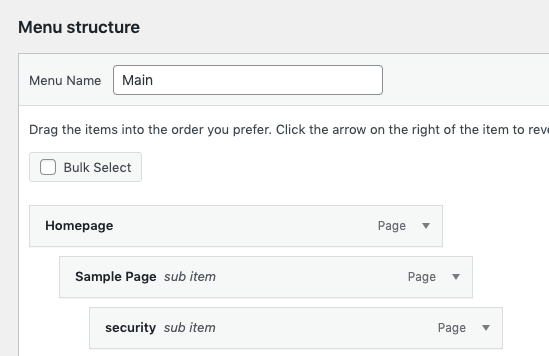
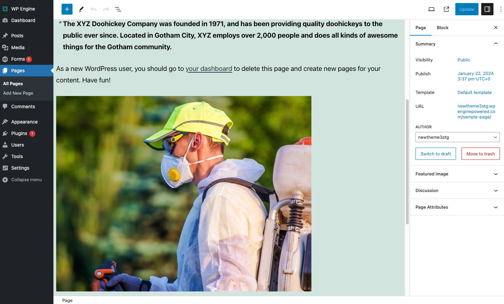
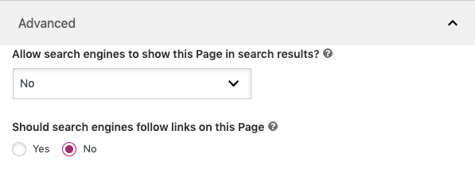
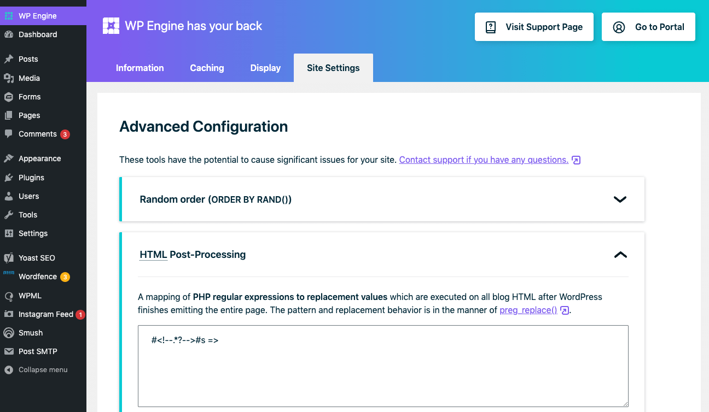

WordPress Development On The Nifty 2024 Theme
The Nifty 2024 theme is Nifty Marketing's custom, speed-focused theme built on top of the Twenty Twenty-One theme from WordPress.
The theme focuses on stripping out unnecessary built-in code and implementing speed-focused custom code to ensure client sites have modern sexy design and low load times.
As such, our theme uses modern browser features such as Flexbox, IntersectionObserver,
and WebP.
Thus, we support the following browsers:
- Chrome 58+
- Firefox 65+
- Safari 14+
- Microsoft Edge 18+
- Chrome 107+ for Android Devices
Internet Explorer is NOT supported.
Initial Site Setup
Theme Installation
- The first step is to set up a clean WordPress install.
- Once WordPress in installed, you can install the theme by going
to
Appearance>Themes>Add Newand then clicking theUpload Themebutton. Alternatively, you can upload the theme via SFTP.
Preliminary Setup
- Add the site logo to the site by modifying
Line 44inheader.php - Upload the site favicon to the root folder
- Add a main navigation menu and name it
Main– this ensures the default CSS stylings are applied.

Install Default Plug-ins
At Nifty, all of our sites use the following plug-ins:
- Yoast SEO
- Gravity Forms
- Akismet Anti-Spam
Gravity Forms Setup
Be sure to enable the following settings
- Disable
Output Default CSS
Main Development
Shortcode-Oriented Development
When developing a Nifty website, our goal is to focus on creating lean and maintainable code. Using shortcodes allows us to create modular, reusable sections of a site that can be plugged into any page on the site. It also allows us to attach CSS to these individual sections, which means the minimum amount of CSS needed to render the page is loaded.
Please observe the following guidelines:
- Each section of a website should have it's own shortcode.
- All shortcode initializers must be added to
/includes/shortcodes.php - All shortcode content must be put in an appropriate directory
within
template-parts - Maintain consistent naming conventions across the shortcode
lifecycle. Example:
- Shortcode Name:
[home_banner] - Shortcode File Name:
home-banner.php - Classes used within shortcode:
<section class=”home-banner”>...</section>
- Shortcode Name:
PHP files can be created/uploaded using SFTP.
Basic Shortcodes
You initialize a shortcode by creating a code block in /includes/shortcodes.php.
Basic shortcodes take a list of custom attributes that are then used to render the desired section. You can initialize this kind of shortcode as follows:
function custom_shortcode($atts){ob_start();include(locate_template( 'template-parts/sections/internal/custom_shortcode.php' ));return ob_get_clean();}add_shortcode( 'custom_shortcode' , 'custom_shortcode' );
The $atts
represents a catch-all for all custom attributes. Once you add this
initializer, you will then need to create the file you named. In
this example, the file must be named template-parts/sections/internal/custom_shortcode.php.
In the newly created file, you will add a PHP block at the top that defines what the custom attributes should be, as well as any default values:
<?php $atts = shortcode_atts(array('title' => 'Cool Law Firm','subheading' => ''), $atts); ?>
In the above example, we define two custom attributes the code will
look for: one named title and one named subheading. If no title is
provided, the default value will be Cool Law Firm - while the default
value for subheading
will be blank.
After the initial PHP block defining attributes, you can add actual code for rendering the section using the attributes. For example:
<section class="internal-banner section-padding"><div class="content-width"><h1 class="banner-title"><?php echo $atts['title'] ?></h1></div></section>
To call the shortcode, you can simply enclose the name of the
shortcode in brackets. Any custom attributes supported by the
shortcode should be included with the name of the attribute, an
= sign,
and the value of the attribute.
Example:
[custom_shortcode title="Custom Title" subheading="Custom Subheading"]
Wrapping Shortcodes
Sometimes it may be better to have a "wrapping shortcode". In addition to taking attributes like a basic shortcode, it also takes in any regular content. This can be useful for putting content in a special layout.
To create a wrapping shortcode, you add an initializer to /includes/shortcodes.php
just as with the basic shortcode. However, you must also add a $content variable
after the $atts
one.
function internal_fullwidth($atts, $content){ob_start();include(locate_template( 'template-parts/sections/internal/internal-fullwidth.php' ));return ob_get_clean();}add_shortcode( 'internal_fullwidth' , 'internal_fullwidth' );
Then you will set up the initial attributes block as with the basic
shortcode. However, you also have access to the $content variable
when coding the output:
<?php $atts = shortcode_atts(array('' => ''), $atts); ?><section class="internal-fullwidth section-padding"><? echo '<div class="content-width">'.$content.'</div>'; ?></section>
You call a wrapping shortcode with an opening bracket tag and a closing bracket tag.
Example:
[internal_fullwidth]Content goes here.[/internal_fullwidth]
Wrapping Shortcodes using $modified_content for lazyloading images
To utilize adding media library files directly to the page editor.
without having to create another shortcode to lazyload an image.
You will need to implement the global variable when creating your
shortcode. $modified_content
This will follow the same structure as a normal Wrapping shortcode
except we assign the variable to the function modify_content($content);
function internal_fullwidth($atts, $content){$modified_content = modify_content($content);ob_start();include(locate_template( 'template-parts/sections/internal/internal-fullwidth.php' ));return ob_get_clean();}add_shortcode( 'internal_fullwidth' , 'internal_fullwidth' );
Then you will set up the initial attributes block as with the basic
shortcode. However, you will now use $modified_content using this
variable will take the images put into the page editor and change
the "src" attribute to "data-url" to follow our lazyloading
practices
<?php $atts = shortcode_atts(array('' => ''), $atts); ?><section class="internal-fullwidth section-padding"><?php echo '<div class="content-width">'.$modified_content.'</div>'; ?></section>
Embedding Styles In Shortcodes
If the shortcode you are creating will be displayed above-the-fold, you should include the styles immediately before the rendering code:
<style>/* Section specific CSS Rules go here */</style>/* Rendering Code Goes Here */
Otherwise, you should have the styles rendered in the footer to improve load time. You can do this by adding the following snippet after the rendering code.
/* Rendering Code Goes Here */<?php if(!function_exists('apply_internal_fullwidth_styles')){function apply_internal_fullwidth_styles(){ ?><style>/* Section specific CSS Rules go here */</style><?php }add_action( 'wp_footer', 'apply_internal_fullwidth_styles' );}?>
Shortcode Coding Priority
The first parts of the site to develop should be the internal-banner.php
and the home-banner.php.
These files represent the above the fold banners used on the
homepage and the rest of the site.
Modifying Styles
To optimize page speed, CSS rules should not be loaded if they are not used on a particular page. We accomplish this by tying CSS to specific sections instead of placing everything in a single CSS file.
CSS Rules should be placed in the following files:
styles.css: All global above-the-fold styles should be put instyles.css. This includes navigation, link, and typography styles.footer.php: Animation and global below-the-fold styles should go here- Individual shortcodes: section specific styles should be placed with the individual shortcodes. You can either have them before the code if the section is visible above the fold, or loaded in the footer if they are above the fold. Visit the shortcode section for detailed examples.
<style> section to prevent
breaking of the animation framework.Blog Setup
Built-In Flags
In the Nifty 2024 theme, blog features can be enabled using flags.
The single.php
file controls how individual blog posts are shown. Possible flags
are:
$metadata: If set totrue, this will show the post date and category. Default istrue.$shareIcons: If set totrue, this will show social media sharing icons. Default istrue.$showAuthor: If set totrue, this will show the author underneath the blog title. Default isfalse.$showNav: If set totrue, this will show the navigation to other blog pages at the bottom of the page. Default isfalse.$showComments: If set totrue, this will show the comments interface. Default isfalse.
The content-blog.php
file controls how blog excerpts are shown. It supports the following
flags:
$metadata: If set totrue, this will show the post date and category. Default istrue.$showAuthor: If set totrue, this will show the author underneath the blog title. Default isfalse.
Modifying the Blog Sidebar
In the Nifty 2024 theme, the sidebar for the blog is now defined in
the /sidebar.php
file. You can now adjust how archives and categories are shown, and
whether they are shown, from this file.
Creating the Search Bar
The search bar used in the blog sidebar is defined in the /searchform.php
file. All customizations to the visual layout can be added here.
Built-In Features
Animation Framework
The Nifty 2024 Theme introduces a custom scrolling animation interface to simplify scroll animations for developers. By adding classes to items you want to be animated, you can focus on crafting custom animations without messing with JavaScript.
Basic Usage
- Add an
animateableclass to any element you want to be animated. This class is monitored by the animation interface and will add a class ofrenderif the element is currently visible within the browser viewport. - Add a custom CSS class describing the starting point of the
animation. For example, you can add a class called
slideLeftand define it in CSS. Your goal with your custom CSS classes is to define the beginning point of the animation usingtransformoropacityproperties. Once therenderclass is added automatically after the element is scrolled into view, the transform and opacity of the element will beunset. This allows the element to move from your defined starting point to it's original placement in the DOM.
Staggered Animations
- If you want multiple items to be animated as a group in a
staggered fashion, add the
animateableandgroupedclass to parent div. - For each child element add a
data-delayattribue with the appropriate delay you want for the sequence
Example:
<div class="animateable grouped"><span data-delay="0ms" class="slideLeft wrapped">1</span><span data-delay="150ms" class="slideRight wrapped">2</span><span data-delay="300ms" class="slideLeft wrapped">3</span></div>
Other Built-In Options
- You can add the following additional preset classes to customize animations further.
infinite: dictates whether the animation should re-trigger with up-and-down scrolling.wrapped: Offers the ability to constrain animation bounds to a parent element.grouped: Allow staggered animation with offset delays
wrapped class
can be finicky if not combined with the grouped class
as newer implementations of IntersectionObserver will not respect
monitoring of elements that overflow.Built-In Inline SVGs
In the Nifty 2022 theme, SVGs can be inserted inline with a custom shortcode that allows for setting size and color attributes.
The template is as follows: [icon type="twitter" size="20"
color="white"]
Replace the size and color as necessary.
Adding More SVGs
If you want to add your own SVGs, you can upload the SVG content
as a .php
file to the template-pats/svgs
directory. You will need to add the following code to the opening
tag of the SVG code after the viewbox attribute:
width="<?php echo $atts['size'] ?>" height="<?php echo $atts['size'] ?>" fill="<?php echo $atts['color'] ?>"
Here is an example opening tag:
<svg xmlns="http://www.w3.org/2000/svg" viewBox="0 0 24 24" width="<?php echo $atts['size'] ?>" height="<?php echo $atts['size'] ?>" fill="<?php echo $atts['color'] ?>">
HTML Sitemap
The Nifty 2024 Theme has a built-in HTML sitemap generator. Simple add the following shortcode to generate links to all pages and posts.
[nifty_sitemap exlude="898, 9320"]
You can add the IDs of indexed pages that you do not want
included. All pages marked as noindex will not be included by
default.
Coding Conventions
Image Loading
General guidelines for images include:
- All images should have
alttags added by defaut in order to meet WCAG 2.1 AA guidance for ADA compliance. - If possible, above-the-fold images should have explicit heights and widths to reduce CLS scores.
- For custom widgets that need to hide images, use
overflow:hidden,visibility:none, andheight:0instead ofdisplay:none. This ensures lazy loading does not break and improves accessiblity.
Above-The-Fold Images
Inline images should not use a data-url attribute as lazy
loading doesn't make sense for above the fold images.
For background images, instead of using background:url() CSS rules, the
preferred method is to instead absolutely position an inline image
using a <picture>
tag. This allows a WebP image to be used on supported browsers,
while falling back to a JPEG image on non-supported browsers.
Example HTML:
<div class="container"><picture class="custom-bg"><source type="image/webp" srcset="https://naqvilaw.com/wp-content/uploads/2022/09/banner-1-1.webp"><source srcset="https://naqvilaw.com/wp-content/uploads/2019/05/banner-1-1-new.jpg"><img src="https://naqvilaw.com/wp-content/uploads/2019/05/banner-1-1-new.jpg"></picture><h1>Hello</h1></div>
Example CSS
.container {position:relative;}.custom-bg img {position:absolute;width:100%;height:100%;object-fit:cover;object-position:0 0;top:0;left:0;z-index:-9;user-select:none;-webkit-user-select:none;pointer-events:none;}
Below-The-Fold Images
For inline images, you must use a data-url atttribute rather than
the src
attribute:
<img data-url="https://niftyrocket.com/amador/image.jpg" src="" alt="cool picture">
For background images, add the the lazyload class and a data-bg-image
attribute with the URL of the desired background image:
<div class="section lazyload" data-bg-img="https://niftyrocket.com/amador/background.jpg"></div>
Do not add background image URLs to any CSS rules.
Misc Guidelines
If you need to use shortcodes within PHP files, use
<?= apply_shortcodes('[shortcodeName setting="true"]'); ?>.Site breakpoints are generally at
1000pxand750px. Additional breakpoints may be used at the developer’s discretion to allow for a smooth mobile experience.The
content-widthclass uses an 1100px + padding container and should be used for sections when necessary. This may be adjusted per site to compensate for designs.The mobile menu usually breaks at 1000px, but may be adjusted for the design.
Nifty websites will not use ACF (advanced custom fields) or custom post types. In some cases, custom post types may be brought over from legacy sites. If this is the case, each custom post type should have the block editor added to the their capabilities as well as an appropriate template set to style the pages accordingly.
Avoid reliance on third-party code bases as much as possible, especially jQuery. Use vanilla JS wherever possible.
All phone number links must be formatted as
<a href="tel:(###) ###-####">All iframes should use a
data-urlrather than asrcAll styled
buttonsand<a>tags functioning as buttons need to have a hover state. Users should be able to identify buttons through the following conditions:- The whole button is clickable, not just the words.
- The cursor is a pointer.
Page Speed Enhancements
Nifty websites do not support AMP. The Nifty theme is sufficient for getting high page speed scores.
Tools:
- https://pagespeed.web.dev/
- https://googlechrome.github.io/lighthouse/scorecalc/#FCP=1735&TTI=5848&SI=1836&TBT=142&LCP=3604&CLS=0.08&FMP=2055&device=mobile&version=9.6.6
Lazy Loading Forms
Lazy Loading can be done with the included Blank
template. We may be able to continue to use AJAX assuming scripts
pull in - but further testing is needed. Google Analytics will not
be loaded to pages using the Blank template.
Create a new page using the provided
Blanktemplate and call in the desired form using this format:[gravityform id="1" title="false" description="false" ajax="false"]Mark the page as
noindexin the Yoast settings.

Update the confirmation of the desired form to redirect to the same page, but with a query parameter of
redirect=truetacked on.
- Embed the URL of the newly created form page using an iframe.
<iframe width=”700” height=”500px” data-url="https://niftyrocket.com/amador/lazy-form/"></iframe>
Adjust the width and height to compensate for CLS and maintain aspect ratio, depending on the form source you are loading.
Font Loading
Below are general font loading guidelines:
- Fonts should be self-hosted. You can download WOFF2 versions of Google Fonts from here: https://google-webfonts-helper.herokuapp.com/fonts
- External fonts should be called from a single file instead of multiple files.
Below is an example of a single fonts.css file that calls
multiple self-hosted fonts in:
@font-face{font-family:'Pathway Gothic One';font-style:normal;font-weight:400;font-display:swap;src:local(''),url('/wp-content/themes/twentynineteen-child/fonts/pathway-gothic-one/pathway-gothic-one-v9-latin-regular.woff2') format('woff2'),url('/wp-content/themes/twentynineteen-child/fonts/pathway-gothic-one/pathway-gothic-one-v9-latin-regular.woff') format('woff')}@font-face{font-family:Oswald;font-style:normal;font-weight:400;font-display:swap;src:local(''),url('/wp-content/themes/twentynineteen-child/fonts/oswald/oswald-v36-latin-regular.woff2') format('woff2'),url('/wp-content/themes/twentynineteen-child/fonts/oswald/oswald-v36-latin-regular.woff') format('woff')}@font-face{font-family:Oswald;font-style:normal;font-weight:700;font-display:swap;src:local(''),url('/wp-content/themes/twentynineteen-child/fonts/oswald/oswald-v36-latin-700.woff2') format('woff2'),url('/wp-content/themes/twentynineteen-child/fonts/oswald/oswald-v36-latin-700.woff') format('woff')}@font-face{font-family:Montserrat;font-style:normal;font-weight:400;font-display:swap;src:local(''),url('/wp-content/themes/twentynineteen-child/fonts/montserrat/montserrat-v15-latin-regular.woff2') format('woff2'),url('/wp-content/themes/twentynineteen-child/fonts/montserrat/montserrat-v15-latin-regular.woff') format('woff')}@font-face{font-family:Montserrat;font-style:normal;font-weight:600;font-display:swap;src:local(''),url('/wp-content/themes/twentynineteen-child/fonts/montserrat/montserrat-v15-latin-600.woff2') format('woff2'),url('/wp-content/themes/twentynineteen-child/fonts/montserrat/montserrat-v15-latin-600.woff') format('woff')}@font-face{font-family:Montserrat;font-style:normal;font-weight:800;font-display:swap;src:local(''),url('/wp-content/themes/twentynineteen-child/fonts/montserrat/montserrat-v15-latin-800.woff2') format('woff2'),url('/wp-content/themes/twentynineteen-child/fonts/montserrat/montserrat-v15-latin-800.woff') format('woff')}
Script Loading
Scripts can be loaded in the header, after the body, or in the
footer. These locations are delineated in the pm-safe
folder.
Generally, only Analytics scripts should be in the header.
Most other scripts should be placed in the footer.
Google Analytics Loading
Below is a way of lazy loading multiple Google Analytics scripts:
<script class="load-my-google" data-google-url="https://www.googletagmanager.com/gtag/js?id=G-9KXEWFH42V"></script><script class="load-my-google" data-google-url="https://www.googletagmanager.com/gtag/js?id=UA-43214009-1"></script><script class="load-my-google" data-google-url="https://www.googletagmanager.com/gtag/js?id=AW-998508717"></script><script>window.addEventListener("load", function(){let googleInit = 0;window.addEventListener("scroll", function(){if(googleInit == 0){const google = document.querySelectorAll(".load-my-google");google.forEach((script) => {const loadSrc = script.getAttribute("data-google-url");script.setAttribute("src", loadSrc);script.classList.remove("data-google-url");});window.dataLayer = window.dataLayer || [];function gtag(){dataLayer.push(arguments);}gtag('js', new Date());gtag('config', 'G-9KXEWFH42V');gtag('config', 'UA-43214009-1');gtag('config', 'AW-998508717');googleInit = 1;}});});</script>
HTML Comment Removal
WPEngine allows us to have them automatically strip out all HTML comments with the following code.
#<!--.*?-->#s =>
This settings page is available from the WPEngine tab. Example link: https://naqvilaw.com/wp-admin/admin.php?page=wpengine-common&tab=site-settings
Site Translations
Certain sites will require supporting multiple languages. Translations will be handled manually in our code. The following steps detail how this is to be done.
To understand clearly how to do this, we will have a few terms we need to define for this guide so that we are clear:
- Overall language page: The is the overall language page under which other, translated pages will be nested. It is generally a clone/copy of the site's homepage in the second language. It will bear the title of the language (i.e. "Espanol" or "Tagalog") and the slug will be the language or the language code (i.e. /es/ or /espanol/ or /tagalog/ or /tgl/ etc.)
- Initial page: The English page that needs to be translated
- Translation page: The translation of the corresponding English page.
Initial Setup
- If the overall language page has not been set up yet, create that page.
- Create a new translation language page and set its parent page as the overall language page.
- Navigate to the initial page that corresponds with the translation page you just created and set the following value for a custom field:
- name: has_translation;
- value:
- Navigate to the translation page and add the following custom field values:
- name: is_translation;
- value:
- If you want there to be an a language switcher in the header or an English / Second Language Menu, navigate to menus and create and name the second language menu. Add any translated pages to the menu as needed.
- Navigate to the header.php. Using php logic, evaluate each page if they have a translation or not. If they do, you will grab the ID of its corresponding language. If they don't, link to either the hompage (if second language) or the overall language page (if English). Example below:
<?php//checks if the page is English or Spanish (defaults to English)// this is necessary for both the language switcher and switching the menusif(get_post_meta(get_the_ID(), 'is_translation', true)){$language = 'translation';}else{$language = 'english'}//checks if the page has English or Spanish translations for the language switcherif(get_post_meta(get_the_ID(), 'has_translation', true)){$translated_page = get_post_meta(get_the_ID(), 'has_translation', true);}else{$translated_page = <page ID of the overall language page>;}if(get_post_meta(get_the_ID(), 'is_translation', true)){$english_page = get_post_meta(get_the_ID(), 'is_translation', true);}else{$english_page = <page ID of the home page page>;}?>
- Wherever you are placing your English to Spanish language switcher, output the switcher with the right links:
<div class="langage-switcher-menu"><?php//change out the the echo for whichever languageif($language == 'english'){echo '<a href="' . get_permalink($translated_page) . '">Espanol</a>';}else{echo '<a href="' . get_permalink($english_page) . '">English</a>';}?></div>
- Wherever you are placing your overall menu / navigation, you can switch which menu you use based on which page you are on:
<div class="flex menus"><input tabindex="-1" type="checkbox" class="mobile-nav-input" id="mobile-nav-input"><label tabindex="0" class="mobile-nav" for="mobile-nav-input" onkeyup="checkTheBox(event);">☰</label><nav class="main-nav" aria-label="Main Menu"><?phpif($language == 'english'){wp_nav_menu(array('menu' => 'Main','menu_class' => 'main-menu',));}else{wp_nav_menu(array('menu' => 'Name of langauge_nav','menu_class' => 'main-menu',));}?></nav></div>
- Ensure styling for the second language navigation matches that of the English navigation
Other Translated Pages
Once the initial setup is done, repeat steps 2-4 above for any additional pages
Setting Up Translated Content
If translated content is being brought in through a shortcode's $content variable or through its $atts attributes, meaning the content is being added in the WP editor, then no further actions need to be completed.
If content is being rendered through the php shortcode itself:
- Add the following code to the /includes/theme-changes.php file at the bottom of the page:
function switch_lang($english, $second_lang){//checks if the page is English or Spanish (defaults to English)if(get_post_meta(get_the_ID(), 'is_translation', true)){$language = 'translation';}if($language == 'translation'){return $second_lang; }else{ return $english; } };
This ensures that the next step will work and will return the right language based on each page.
- In the shortcode, where you are rendering text that needs to change based on the Spanish / English translation, add the following code:
<= switch_lang('This is the English text', 'Esto es el texto de langua secunda'); ?>
Appendices
Nifty 2024 Changelog
- added fonts folder with fonts.css file for typical google font adding
- implemented clickable sub menu dropdown arrows for mobile.
- added a randomized css versioning option in theme-changes.php on line 15 NOTE This should only be used temporarily to clear WPengine forced style cache. After changes are visible comment it back out.
- Implemented page editor styles in template-parts/nifty-editor-styles.css
- Added auto resize Iframes function for Iframes that have the class "resizable"
- Added a new shortcode in "blocks" directory [lazy_iframe_block] this will handel both AJAX form pages and videos with an image placeholder.
- Added function to theme-changes.php that checks if the word AJAX is present in a page title. If AJAX is in the title it will be added to a new tab in the Admin Pages menu
- Added function to theme-changes.php that checks for /es/ slug to change the html lang="en-US" to lang="es-ES" for spanish pages. Currently Commented out.
- Added new global variable called $modified_content in theme-changes.php this will change the src attribute of images placed in page builder and change them to data-url for lazyloading. NOTE: see shortcodes.php for use on internal_fullwidth shortcode. Where $content is being replaced.
- removed ADA components folder from template parts (not being used)
Nifty 2023 Changelog
- New lazy loader script using
IntersectionObserver, which should be more performant on budget devices. - New animation framework for scroll animations
- Updated Nifty Sitemap to exclude
noindexpages as marked by Yoast. - Slimmer theme due to the removal of several
WordPressandtwentytwentyonedefaults, such as emojis, default CSS variables, and Internet Explorer detection scripts. Overall, there is roughly a 30% reduction in default HTML. - Revamped SVG shortcode implementation to support custom attributes for color and size
- "Flag-based" approach for enabling functionality on blogs
- Implementation of new blank template for Lazy Loading
Gravity Formforms - Added new default CSS for forms so we don't need to output CSS
from the
Gravity Formsplug-in anymore - New custom blog sidebar template for maximum control
- New Search Bar template
- Revamped CSS and layout for all blog pages
- Removed all remaining references to FontAwesome
- Implemented default CSS styles for built-in Wordpress
imageclasses - Implemented default CSS styles for built in Wordpress
textclasses - Implemented custom checkbox styles
- Slimmed and implemented better CSS defaults such as
max-widthconstraints andobject-fit:contain - Refactored built-in JavaScript
- Removed Support for AMP
Reserved Classes
The following classes are used by the theme and should not be used for other purposes:
- active
- ada
- aligncenter
- alignleft
- alignright
- author
- awards-slider
- background-move
- banner-title
- blog-with-sidebar
- bottom-share
- content-area
- content-width
- custom-share
- edit-link
- entry-content
- entry-date
- entry-footer
- entry-header
- entry-title
- flex
- grouped
- has-text-align-center
- has-text-align-right
- header
- header-content
- home-awards
- home-banner
- home-contact
- home-cta
- home-news
- home-pas
- home-results
- home-social
- home-team
- home-testimonials
- image-list
- indiv-post
- infinite
- inner-masthead
- internal-banner
- internal-cta
- internal-fullwidth
- internal-sidebar
- lazyload
- left-button
- logo-container
- main-menu
- main-nav
- masthead
- menus
- meta-nav
- mobile-nav
- mobile-nav-input
- name
- nav-next-text
- nav-prev-text
- nifty-sitemap
- page-description
- page-header
- page-links
- page-title
- post-excerpt
- post-info
- post-single-header
- render
- right-button
- screen-reader-text
- search-form
- section-padding
- shp0
- sidebar-meta
- site-main
- skip-bar
- spinner
- sticky-post
- submenu
- svg-container
- testimonial-box
- testimonial-container
- testimonial-section
- testimonial-words
- title-container
- top
- wrapped
File Structure
| File Name | File Path | Description |
|---|---|---|
| 404.php | (root) | Template for pages that return a 404 Not Found error. This page should represent the styles of the site, including a header banner and footer when appropriate. |
| footer.php | (root) | All footer HTML components belong in the footer. An extra directory nested under the “template-parts” directory may also be used by which shortcodes may be generated for the footer if the footer.php file is too long or difficult to manage. This should be the exception. Include other global styles in the footer.php that couldn’t go in the style.css file. |
| header.php | (root) | This contains code for the main navigation and logo. Adjust as necessary. There is a deafult script used for ADA. |
| archive.php | (root) | This page can be changed to reflect theme styles but maintain the integrity of the archive loop. |
| search.php | (root) | This file contains the parent theme’s code and should be changed only to represent the styles of the site. |
| single.php | (root) | This is the template for single blog posts. Set up the flags as necessary |
| functions.php | (root) | DO NOT TOUCH. Use `includes/theme_changes.php` instead |
| page.php | (root) | This file should not be touched or changed unless there are very extenuating circumstances. It is a simple loop to grab content of a page. The overall styles and content of every page will be handled solely by shortcodes. |
| aria-accessibility.html | general-info/aria-accessibility.html | Default has Aria accessibility info. This folder can be used for any information regarding specific site builds. Example: shortcode descriptions, notes and any other general information. |
| content-blog.php | template-parts/content | Set up flags as necessary |
| content-excerpt.php | template-parts/content | Shouldn't need to touch except for in extenuating circumstances. |
| content-none.php | template-parts/content | Shouldn't need to touch except for in extenuating circumstances. |
| content-page.php | template-parts/content | Shouldn't need to touch except for in extenuating circumstances. |
| content-single.php | template-parts/content | Shouldn't need to touch except for in extenuating circumstances. |
| content.php | template-parts/content | Shouldn't need to touch except for in extenuating circumstances. |
| home-awards.php | template-parts/sections/homepage/ | Template for an awards section on the homepage |
| home-banner.php | template-parts/sections/homepage/ | Template for above-the-fold homepage banner |
| home-contact.php | template-parts/sections/homepage/ | Template for contact section of homepage. |
| home-cta.php | template-parts/sections/homepage/ | Template for the CTA on the homepage |
| home-news.php | template-parts/sections/homepage/ | Template for recent news on the homepage |
| home-pas.php | template-parts/sections/homepage/ | Template for practice areas on the homepage |
| home-results.php | template-parts/sections/homepage/ | Template for showing recent case results on homepage |
| home-social.php | template-parts/sections/homepage/ | Template for showing social media updates on homepage |
| home-team.php | template-parts/sections/homepage/ | Template for showing team members on homepage |
| internal-banner.php | template-parts/sections/internal/ | Template for above-the-fold section on all internal pages |
| internal-cta.php | template-parts/sections/internal/ | Template for sitewide CTA |
| internal-fullwidth.php | template-parts/sections/internal/ | Do not touch unless necessary. This shortcode allows for plain content with a maximum width preset. |
| internal-pas.php | template-parts/sections/internal/ | Sitewide practice area section |
| internal-sidebar.php | template-parts/sections/internal/ | Sitewide sidebar section |
| button.php | template-parts/blocks | Style buttons in a certain way to be used throughout the site design. |
| link.php | template-parts/blocks | If some links should work/act in a certain way on the site, use this php template file to display them. |
| text.php | template-parts/blocks | If some stylized text is used over and over, consider using this file via shortcode to generate it. |
| contact.php | template-parts/pages | Use to create a custom contact page template. |
| sitemap.php | template-parts/pages | DO NOT TOUCH. This is the built-generator for a sitemap. |
File Structure For Additional Page-Specific Shortcodes
Sometimes, some pages will have their own, dedicated content and shortcodes. It is cleaner to incorporate those into their own directories and php files to keep the code organized.
If a team page or practice areas page on the site has several shortcodes not used anywhere else, it may be advantageous to set up a team directory or practice-areas directory within the pages directory and create shortcodes which utilize php pages within these directories.
To illustrate, the file structures of the example above may look similar to this:
Directory: template-parts/pages/team
Files inside directory:
- team-header.php
- team-photos.php
- team-awards.php
- team-members.php
Aria Accessibility
This section is a brief over view of Aria Attributes and their use. For a more in-depth explanation and use cases read here:Using WAI-ARIA
Aria Attributes
These act as states of an element, whether they a
assume the following all have “aria-“ attached to the front.
If we specify these roles, we have to give the state of the roles as well
the way I slayed this out:
role
- aria-*
- possible value/s of aria attribute
button
- expanded
- id of element for which it controls expansion
- pressed
- id of element for which it controls expansion
checkbox
- checked(required)
- readonly
- can’t be edited or changed (kind of like the disabled button)
columnheader (maybe only use with a div)
- sort
- ascending|descending|none|other
combobox
- controls (required)
- id of element for which it controls
- expanded (required)
- id of element for which it controls expansion
- autocomplete
- inline|list
- required
- true (if used: there is no false – you would just omit)
- activesescendant
- id of current active element that is a descendant of the element
- orientation
- horizontal|vertical|ambiguous
group
- activedscendant
- id of current active element that is a descendant of the element
- expanded
- id of element for which it controls
img, link, document, directory, alert(used with p, div, or span), scrollbar
- expanded
- id of element for which it controls
listbox
- required
- true (omit if false)
- multiselectable
- true (omit if false)
- expanded
- id of element for which it controls
- active descendant
- id of current active element that is a descendant of the element
- orientation
- horizontal|vertical|ambiguous
menuitem, menuitemcheckbox, menuitemradio
- posinset
- number(which position is it in a list)
- setsize
- number(how many are in the list)
option
- posinset
- number(which position is it in a list)
- setsize
- number(how many are in the list)
- checked
- true(omit if false)
- selected
- true(omit if false)
progressbar
- valuemax
- number(max number of progress bar)
- valuemin
- number(max number of progress bar)
- valuenow
- number(what the value is currently at)
- valuetext
- written text of the valuenow
- i.e. “five”
radio
- posinset
- number(which position is it in a list)
- setsize
- number(how many are in the list)
- selected
- true(omit if false)
separator, slider
- valuetext (if focusable)
- arbitrary text
- orientation
- horizontal|vertical|ambiguous
spinbutton
- required
- true(omit if false)
- readonly
- can’t be edited or changed (kind of like the disabled button)
- value text
- arbitrary text
switch
- readonly
- can’t be edited or changed (kind of like the disabled button)
tab
- posinset
- number(which position is it in a list)
- setsize
- number(how many are in the list)
- expanded
- id of element for which it controls
- selected
- true(omit if false)
toolbar
- activesescendant
- id of current active element that is a descendant of the element
- expanded
- id of element for which it controls
- orientation
- horizontal|vertical|ambiguous
tree
- multiselectable
- true (omit if false)
- required
- true (omit if false)
- activesescendant
- id of current active element that is a descendant of the element
- expanded
- id of element for which it controls
- orientation
- horizontal|vertical|ambiguous
tree item
- posinset
- number(which position is it in a list)
- setsize
- number(how many are in the list)
- checked
- true(omit if false)
- selected
- true(omit if false)
- expanded
- id of element for which it controls
- level
- number(how many levels deep is the element from its tree ancestor?)
ARIA (for=””) attribute
If an element is controlling another element, the for=”” attribute should be used. The for value is the id of the element it is controlling.
- i.e.:
- <button for=”popup” onclick=”document.querySelector(‘#popup’).classList.add(‘active’);” >Click</button>
- <div id=”popup”></div>
ROLES: (role=“”) attribute
-
These act as descriptions of an element’s job or function
<a>
- Inherent role: link
- Other specified roles:
- button
- checkbox
- menuitem
- menuitemcheckbox
- menuitemradio
- option
- radio
- switch
- html item
- tab
- if it is a tab that hides content
- treeitem
- and item of a list within a list, much like how these notes are set up
<blockquote>
- any role
<button>
- checkbox
- link
- menuitem
- menuitemcheckbox
- menitemradio
- option
- radio
- switch
- tab
<footer>
- group
- specifies that the footer does NOT belong to the article, so it is not part of a summary or Table of Contents
- none
- specify that the footer should not be accessible
- presentation
- same as ‘none’
<form>
- search
- none
- presentation
<h1> - <h6>
- none
- presentation
- tab
<header>
- group
- none
- presentation
<hr>
- none
- presentation
<iframe>
- application
- document
- img
- none
- presentation
<img> (needs alt text)
- button
- checkbox
- link
- menuitem
- menitiemcheckbox
- menuitemradio
- option
- progress bar
- scrollbar
- separator
- slider
- switch
- tab
- tree item
<input type=“button”>
- link
- menuitem
- menuitemcheckbox
- menuitemradio
- option
- radio
- switch
- tab
<input type=“checkbox”>
- button
- menuitemcheckbox
- option
- switch
<input type=“image”>
- link
- menuitem
- menuitemcheckbox
- menuitemradio
- radio
- switch
<input type=“radio”>
- menitiemradio
<input type=“text”>
- combobox
- search box
- spinbutton
<li> (with ul or ol parent)
- menuitem
- menuitemcheckbox
- menuitemradio
- option
- none
- presentation
- radio
- separator
- tab
- treeitem
<ol>
- directory
- group
- listbox
- lets user select one or more options from a list
- menu
- menubar
- none
- presentation
- radio group
- tablist
- toolbar
- tree
<ul>
- directory
- group
- listbox
- lets user select one or more options from a list
- menu
- menubar
- none
- presentation
- radio group
- tablist
- toolbar
- tree
<div>
<p>
<span>
- can take on any role:https://www.w3.org/TR/html-aria/#aria-table